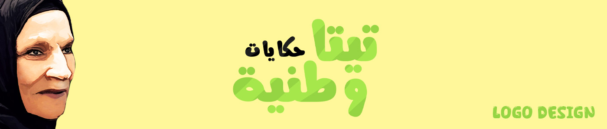
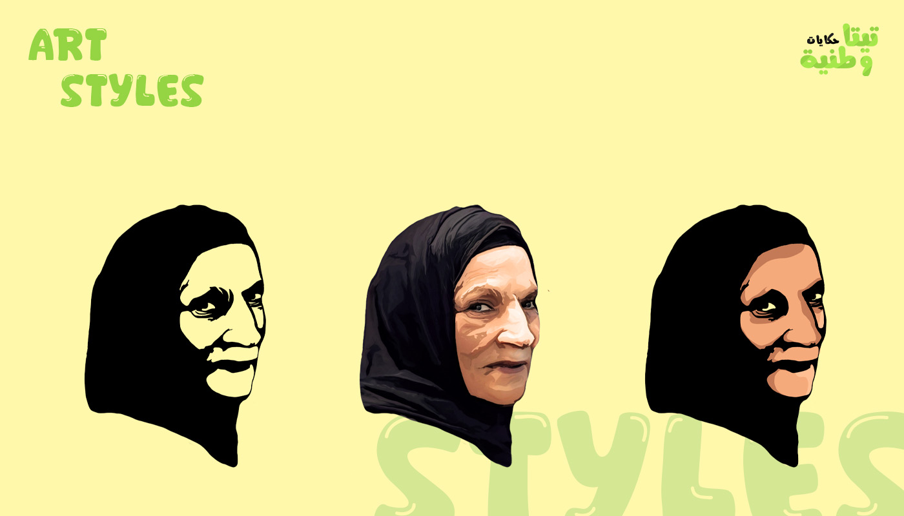
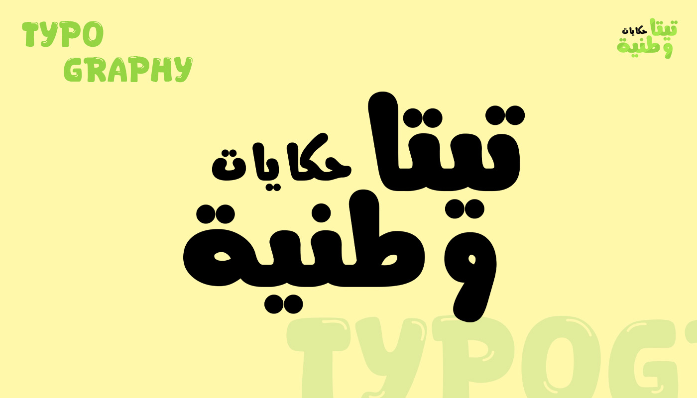
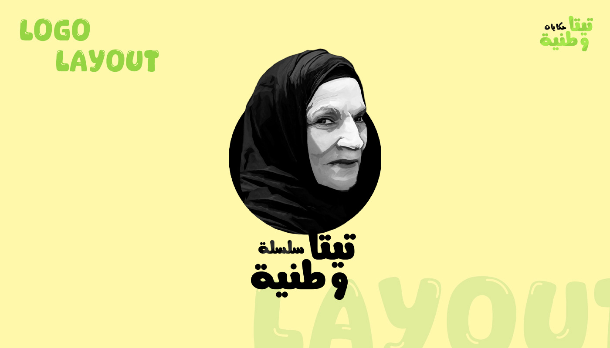
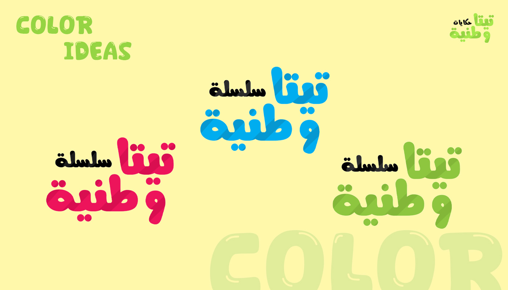
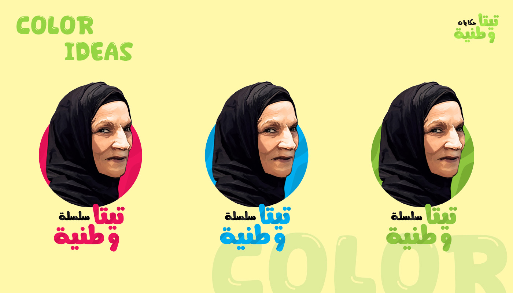
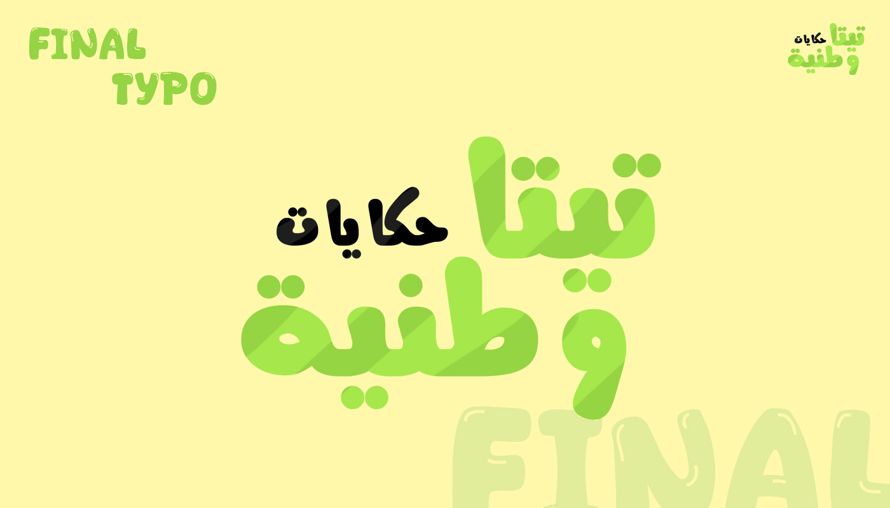

تيتا وطنية
تيتا وطنية هي فكرة سلسلة حكايات للأطفال عن مصر، بتحكيها تيتا اسمها تيتا وطنية.
The main creative direction of this project was to focus on the character itself, making Teta Wataniya the central visual identity and the recognizable face of the storytelling series.
Logo Design






